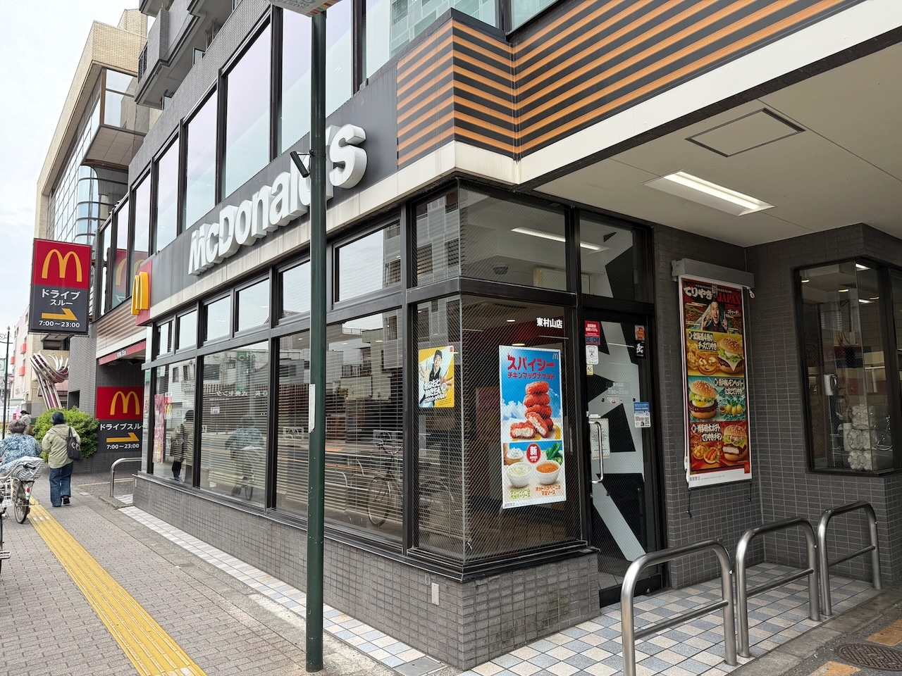
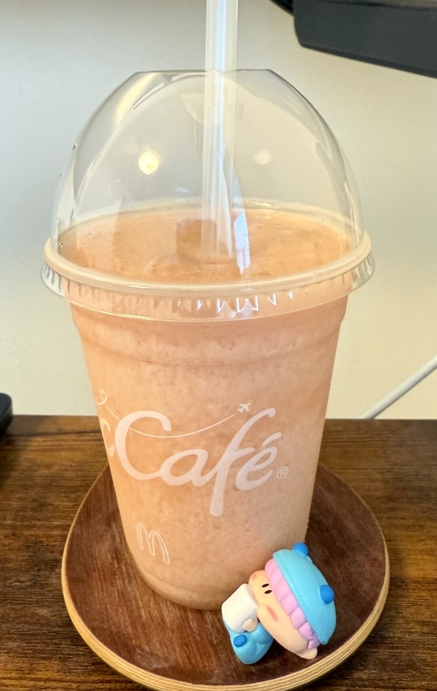

Xのマクドナルド公式アカウントより発表された告知に、日本中が驚きました！
このシルエットに「ちゃお」と言ったら・・・。
その正体は、２０２５年５月２８日より販売開始となった「もものスムージー」「もものミックスフルーツフラッペ」の宣伝のためのコラボ！
てっきりハッピーセット！？と思ったりした私ですが（約２０年前に一度ミルモのハッピーセットがありました）、過去にスイパラともコラボしたミルモやちゃおだったりするので、今回のコラボはアリですね。
「ミルモでピーチ！」のロゴマークも全然違和感なしです。
（極上！！めちゃモテピーチ委員長、きらりん★ピーチレボリューションの方はちょっと強引な気もするけど^^;）
なおコラボ自体はXの公式アカウントでのみ行われていて、公式サイトやインスタグラムでは見られませんでした。
以下に公式アカウントでのポストを集めてみました。
今回のコラボに加え、コラボ以外にもXのポストは面白いものばかりで私は結構気に入っていたりします。
明日公開のコラボ・・・
— マクドナルド (@McDonaldsJapan) May 23, 2025
言っちゃおっかなあ
言っちゃおっかなあ
言っ”ちゃお”っかなあ pic.twitter.com/CEeomKQlrH
寄り道マックし〜〜〜ちゃお！！！
— マクドナルド (@McDonaldsJapan) May 24, 2025
5/28(水)～期間限定
もものスムージー＆もものミックスフルーツフラッペ発売！
詳細・販売店舗はこちら→ https://t.co/E4TJktksNR pic.twitter.com/G4SKgndVnS
スムージーに魔法をかけるミルモ🪇
— マクドナルド (@McDonaldsJapan) May 25, 2025
5/28(水)～期間限定
もものスムージー＆もものミックスフルーツフラッペ発売！
詳細・販売店舗はこちら→ https://t.co/E4TJktksNR
※もものミックスフルーツフラッペは、もも果汁とバナナ果汁あわせて2％使用。 pic.twitter.com/QRnyiTynWn
篠塚ひろむ先生へ @hiromug
— マクドナルド (@McDonaldsJapan) May 25, 2025
あの頃、マグカップからミルモが出てくるよう真剣に願っていました。コラボしていただきありがとうございました。
「ミルモでポン！」はちゃおプラスで！https://t.co/7xXoK20qBw
好きな人と寄り道マックする喜びは
— マクドナルド (@McDonaldsJapan) May 28, 2025
プライスレス🩷#寄り道マックしちゃお https://t.co/TFaZtcOhFO pic.twitter.com/9W9JHQKjxS
せっかくのコラボなので、私も「もものスムージー」を求めてマクドナルドの店舗に行ってきました。

地元のマックへ！
ハンバーガー好きな私なのでいつもお世話になっています。
店内にコラボ関連のものはあるかな・・・と探してみたけど、一切ありませんでした(^◇^;)
やはりX上でのみのコラボのようですね。

無事に「もものスムージー」をゲット！
テイクアウトしてお家でいただきます。
初夏のちょっと暑い日のおやつに飲むとスカッとする冷たさと美味しさですね(^^)
今回はグッズ販売などもなく、ちょっとしたコラボといった感じでしたが、こういうタイアップなコラボも盛り上がって楽しいですね。
今後もいろんなコラボが見られることに期待したいです。
(2025/5/31)